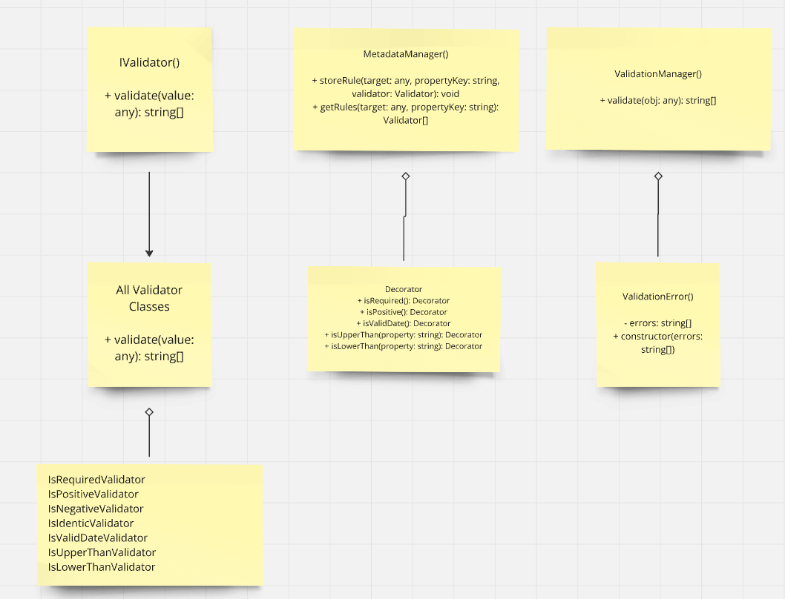

A TypeScript validation library inspired by class-validator, providing decorators for object validation.
Install the library using npm:
npm install validation-library

Import the decorators and validation function:
import { isRequired, isPositive, validate } from 'validation-library';
class Product {
@isRequired()
name: string;
@isPositive()
@isRequired()
price: number;
}
const product = new Product();
product.name = "Coffee";
product.price = 5.99;
try {
validate(product);
console.log("Validation passed!");
} catch (error) {
console.error(error.errors);
}
@isRequired() - Ensures value is not null/undefined/empty@isPositive() - Validates positive numbers@isNegative() - Validates negative numbers@isValidNumber() - Validates numeric values@isValidDate() - Validates Date objects@isUpperThan(ref) - Validates value greater than reference@isLowerThan(ref) - Validates value less than reference@isIdentic(field) - Validates matching field values@isPassword(options) - Validates password requirementsThe @isPassword decorator supports customizable options:
class User {
@isPassword({
minLength: 8,
maxLength: 20,
requireUppercase: true,
requireLowercase: true,
requireNumber: true,
requireSpecialChar: true,
noSpaces: true
})
password: string;
}
You can create custom validators by implementing the Validator interface:
import { Validator } from 'validation-library';
export class CustomValidator implements Validator {
validate(value: any): string[] {
// Your validation logic
return []; // Return an array of error messages if validation fails
}
}
Decorator Pattern
Strategy Pattern
Validator interface defined.IsRequired, IsPositive, etc.) are available.Singleton Pattern
MetadataManager and ValidationManager are static classes.Observer Pattern
Factory Method Pattern
validate(object) - Validates an object against its decoratorsAll decorators are property decorators and can be combined:
class Example {
@isRequired()
@isPositive()
value: number;
}
Run the test suite:
npm test
Run tests in watch mode:
npm run test:watch
The project is organized as follows:
src/
├── core/ # Core validation logic
├── decorators/ # Validation decorators
├── validators/ # Validator implementations
└── errors/ # Custom error types
Contributions are welcome! Please fork the repository, create a new branch, and submit a pull request.
This project is licensed under the MIT License. See the LICENSE file for details.